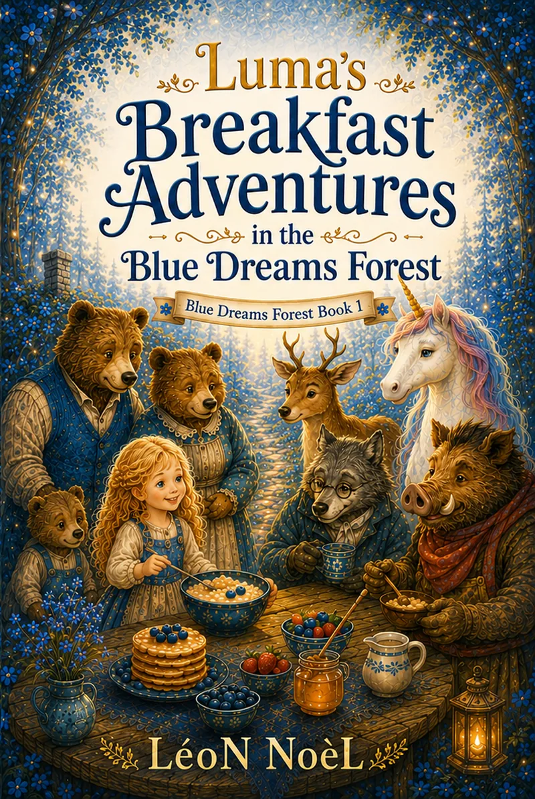

Blue Dreams Forest · Ages 4–8
Luma’s Breakfast Adventures
Five Gentle Read-Aloud Stories

Inside the story
Five breakfast-sized adventures for warm, unhurried shared reading.
Follow Luma from the bears’ cottage to the first friendly breakfast paths of the Blue Dreams Forest.
From the bears’ cottage to the friendly breakfast paths of the Blue Dreams Forest, this first Luma collection uses food, hospitality, and small encounters as openings for kindness and conversation.
Why this story can help
Five breakfast-sized adventures for warm, unhurried shared reading.
From the bears’ cottage to the friendly breakfast paths of the Blue Dreams Forest, this first Luma collection uses food, hospitality, and small encounters as openings for kindness and conversation.
Good for
- Kindness and hospitality
- Short read-aloud sessions
- Entering the Blue Dreams Forest
Looking for a screen-free follow-up? Browse the free printable library →
Keep the story going
Free companion resources.
Printables for home, classroom, library, or a quiet follow-up after reading.
More printables and reading activities are available in the free resource library.
Browse free resources →Explore more